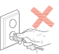

安全防範措施
斷開產品電源
本產品必須放置在靠近且容易觸及到電源插座的地方，以便於從電源插座上及時拔下產品電源插頭切斷電源！
雷射安全
雷射輻射對人體有害。由於雷射元件完全密閉在印表機內，雷射輻射不會洩露。為了避免雷射輻射，請不要隨意拆機！
本機遵循 CFR 標準的 1 類雷射產品。本機帶有Ⅲ b 類的雷射二極體，在雷射元件中無雷射輻射的外泄。
本機內部的雷射元件上貼有如下標籤：

回收和再迴圈
為了保護環境，我公司已經為廢棄的產品建立了回收和再循環系統。有關產品回收請參見奔圖官網www.pantum.com。
安全警告
在使用本印表機前，請注意如下安全警告：
|
|
||
|---|---|---|
 |
印表機內部有高壓電極。在清潔印表機之前，請確保已切斷 電源！ |  |
|
請勿用濕手插拔電源線插頭，以免導致電擊。 |  |
 |
印表機列印時和列印後，定影元件會處於高溫狀態，請勿觸摸定影單元（圖示陰影部分）， 以免造成燙傷！ |  |
|
定影單元有高溫警示標籤，請勿移動或損壞該標籤。 |  |
 警告
警告注意事項
使用列印前的注意事項：
1. 閱讀和理解所有說明；
2. 瞭解電器使用的基本常識；
3. 遵循機器上標識或隨機手冊上的警告和說明；
4. 如果操作說明與安全資訊有衝突，請以安全資訊為准；您可能錯誤理解了操作說明；如果您不能解決衝突，請撥打售後電話或與服務代表聯繫以尋求説明；
5. 清潔之前，請將電源線從 AC 電源插座拔下。請勿使用液體或氣霧清潔劑；
6. 請勿將本機器放在不穩定的檯面上，以免跌落造成嚴重損壞；
7. 嚴禁將本機器置於散熱器、空調或通風管附近；
8. 請勿在電源線上壓任何物品；請勿將本機器放在人們會踩到其電源線的地方；
9. 插座和延長線不要超載；這可能會降低性能，以及造成火災或電擊；
10. 謹防小動物咬噬 AC 電源線和電腦介面線；
11. 切勿讓尖銳物品刺穿機器槽孔，以免觸到內部高壓裝置，造成火災或電擊；切勿讓任何液 體濺到機器上；
12. 請勿拆解本機器以免造成電擊；需要修理時應請專業維護人員進行；打開或卸下護蓋時會 有電擊或其它危險；不正確的拆裝可能會導致以後使用時造成電擊；
13. 若出現以下情況，請將機器從電腦和牆上 AC 電源插座上拔下，並聯絡專業維修人員進行維護：
• 機器中濺入了液體。
• 機器受到雨淋或進水。
• 機器跌落，或機殼摔壞。
• 機器性能發生明顯變化。
14. 只調整操作說明中提到的控制；不正確地調整其它控制可能會造成損壞，並且需要專業維 修人員用更長時間才能修好；
15. 避免在雷暴天氣使用本機器，以免遭到電擊；如果可能，請在雷雨期間拔下 AC 電源線；
16. 如果連續列印多頁，出紙盤的表面會變得很燙 , 當心不要觸碰此表面，並讓兒童遠離此表面；
17. 與該印表機相連的設備的信號線不能連接到戶外；
18. 在換氣不暢的房間中長時間使用或列印大量檔時，請您適時換氣；
19. 待機狀態下，產品未接收到作業指示一段時間後（如 1 分鐘），會自動進入節電（休眠）模式； 只有當產品無任何外接輸入電源相連時才能實現零能耗；
20. 本產品為 Class 1 等級設備，使用時必須將其連接到帶有保護性接地線的電源插座上；
21. 本產品運輸過程中請按照產品包裝箱運輸標識放置；
22. 本產品為低電壓設備，在低於本產品規定電壓範圍時，使用過程中如出現列印內容碳粉脫落， 或開機出現啟動緩慢等故障，請參見產品注意事項或致電奔圖售後服務中心；
23. 本產品為整機銷售，消費者可到奔圖售後服務中心購買所需配件。如銷售產品與包裝清單 不一致，請到產品指定售後服務中心進行處理；
24. 請將本產品安裝在溫度介於10℃至32.5℃之間 , 相對溫度介於20%至80%之間的地方；
25. 出於安全等考慮，在某些情況下，印表機連續列印一定量後，可能會轉成間歇式列印；
26. 請妥善保管本手冊。
法規資訊
|
|
此符號表明不能將該產品與其它廢物一起隨意丟棄。更妥善的做法，您應該將廢棄 設備送到指定的收集點，以便回收利用廢棄的電氣和電子設備。 |
|
|
本產品適合室內使用，不適合室外使用。 |
|
|
歐共體 (EC) 指令合規性 本產品符合歐共體理事會 2014/30/EU 和 2014/35/EU 指令的成員國近似和協調法規中涉及電磁相容性和電氣設備安全性（為在特定電壓範圍內使用）的保護要求。 本產品製造商為：Zhuhai Pantum Electronics Co., Ltd., No.3883,Zhuhai Avenue,Zhuhai,Guangdong,China 519060. 有關這些指令要求的合規聲明，可向授權代表索取。 本產品符合 EN 55032 的 B 級範圍和 EN 60950 的安全要求。 |
|
|
本產品僅適用於非熱帶地區安全使用。 |
|
本產品僅適用於海拔 2000 米及以下地區安全使用。 |
|
|
本產品完全符合中國電子行業標準 SJ/T11364-2006 的要求。 |